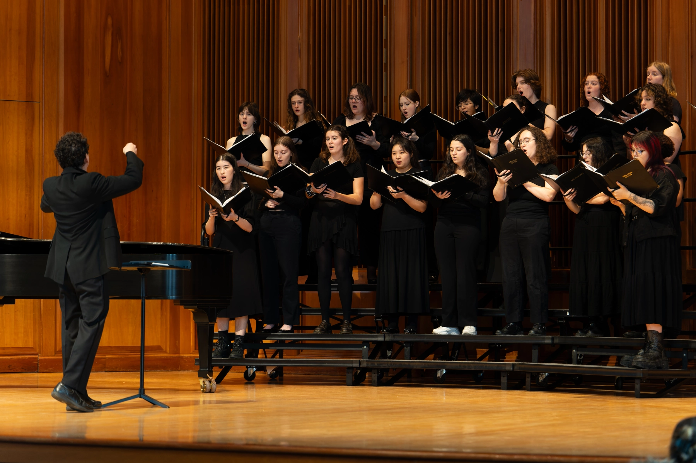
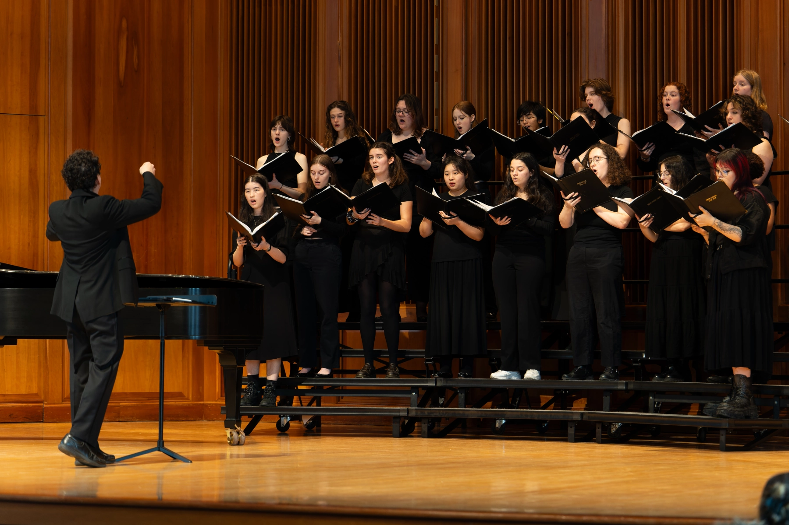

Smith College Glee Club
The Smith College Glee Club is a sixty person treble choir at Smith College.
 

Important Links
- Member Directory
- A list of current Glee Club members, including their voice parts and class years.
- Audition Sign-ups
- An external link to sign up for an audition to join the Glee Club.
Contact Us
For questions about the Glee Club, email our director Jonathan Hirsh.